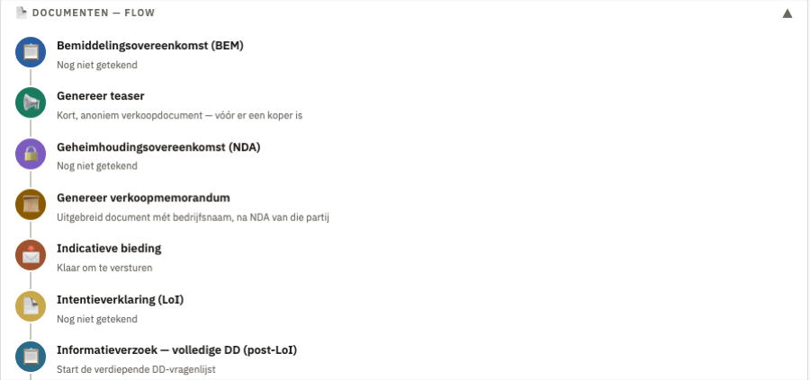
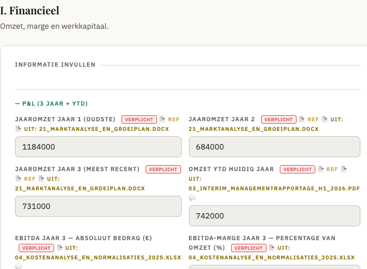

Eén traject. Eén dataroom. Eén lijn naar closing.
Breng structuur, snelheid en regie in ieder overnametraject.
Van eerste documentverzoek tot closing werken koper, verkoper en adviseur in één omgeving. Met duidelijke fases, rollen, documenten, vragen en acties.

Meer grip op het traject.
Een overnametraject bestaat uit honderden documenten, tientallen vragen, openstaande acties en meerdere betrokken partijen. In de praktijk raakt informatie verspreid over e-mail, Excel, losse datarooms en andere systemen.
Koers voor Morgen brengt het volledige traject samen in één beheersbare omgeving.
AI die het dossier bewaakt
Geen los verkooppraatje — dit zijn drie voorbeelden van signalen die het platform tijdens een lopend traject daadwerkelijk geeft.
3 documenten ontbreken in de fase Financieel & DD — het platform houdt per categorie bij wat al is aangeleverd en wat nog niet.
Omzetcijfer wijkt af van een eerder aangeleverd document voor hetzelfde boekjaar — pas over totdat is uitgezocht welke waarde klopt.
Vraag staat 6 dagen open zonder reactie — zichtbaar voor de begeleider, zodat niets blijft liggen richting closing.

Elke waarde herleidbaar naar het brondocument
Cijfers uit jaarrekeningen, managementrapportages en Excel-overzichten worden automatisch herkend en ingevuld — mét een directe verwijzing naar het brondocument, zodat elke waarde te controleren blijft.
AI helpt, u beslist. Het platform structureert en signaleert — het vult geen ontbrekende gegevens in en doet bij twijfel geen aanname, maar meldt het. De inhoudelijke beoordeling en elke beslissing blijven bij de adviseur.
Zo werkt een traject
Voor adviseurs die regie willen houden
Koers voor Morgen is ontwikkeld voor professionals die meerdere partijen door complexe overnametrajecten begeleiden.
Voor accountants en adviseurs die werken aan transacties binnen:
Een dataroom bewaart documenten voor één fase van het proces. Koers voor Morgen draagt het volledige traject — voorbereiding, due diligence, vragen, onderhandeling en closing — als één doorlopend dossier, met de adviseur als regisseur. Geen losse tooling per fase, geen informatie die tussen wal en schip valt.
Zo gaan we om met uw transactiedata
Een overnametraject bevat vertrouwelijke bedrijfs- en persoonsgegevens. Wat het platform daarmee doet, staat concreet vast — hieronder de kern, volledig in de privacyverklaring en voorwaarden.
Van verkoopklaar maken tot de juiste koper
Het traject in Koers voor Morgen is de kern. Binnen dat traject worden een anonieme teaser en een uitgebreider verkoopmemorandum automatisch samengesteld uit de al ingevulde due-diligence-data. Daaromheen twee onderdelen van dezelfde lijn: een gratis scan om te bepalen of een bedrijf overnameklaar is, en een matching-platform dat kopers en verkopers bij elkaar brengt.
Hoe overnameklaar is uw bedrijf?
Eén scan met inzicht in opvolging, waardering, organisatie en processen — afgestemd op uw sector. Onafhankelijk, zonder verplichtingen.
Start de gratis bedrijfsscan →Zo vinden kopers en verkopers elkaar
Zodra een teaser klaarstaat, wordt die zichtbaar voor kopende partijen met een passend zoekprofiel — gefilterd op sector, regio en omzetklasse.
Bekijk het matching-platform →Klaar om jouw volgende overnametraject beter te organiseren?
Plan een korte kennismaking — een rondleiding door het platform, afgestemd op de werkwijze van jouw kantoor. Wilt u daarna verder, dan richten we samen een testtraject in.